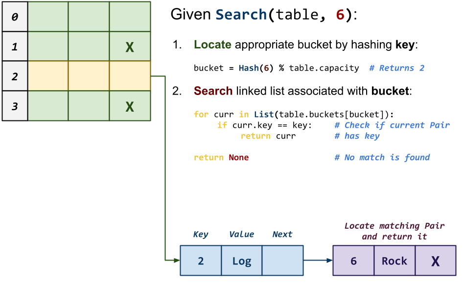

Homework 08: Memory Management, File System
The goal of this homework assignment is to allow you to practice managing
dynamic memory in C by building fundamental data structures and
navigating the file system using low-level functions and system calls.
The first activity involves implementing a hash table library, while the
second activity requires you to use this library to build a duplicates
utility that determines if there are any duplicate files by computing the
checksum of each argument.
For this assignment, record your source code and any responses to the
following activities in the homework08 folder of your assignments
GitHub repository and push your work by noon, Saturday, April 15.
Activity 0: Preparation¶
Before starting this homework assignment, you should first perform a git pull
to retrieve any changes in your remote GitHub repository:
$ cd path/to/repository # Go to assignments repository
$ git checkout master # Make sure we are in master branch
$ git pull --rebase # Get any remote changes not present locally
Next, create a new branch for this assignment:
$ git checkout -b homework08 # Create homework08 branch and check it out
You are now ready to work on the activities below.
Frequently Asked Questions¶
Activity 1: Table Library (8 Points)¶
As discussed in your data structures class, a map is a container that allows the user to associate keys to values. This enables users to easily lookup values by a non-numeric key such as a string in an efficient manner. Maps (aka dict in Python) are used in many applications and scripts. For instance, whenever we used JSON, we were accessing a map.
Of course, being a bare bones language, C does not have a built-in map in its standard library. Because of this, we will build our own map container by implementing a hash table using the separate chaining technique to manage collisions.
Separate Chaining Hash Table¶
Fundamentally, a hash table is just an array. Normal arrays in C, unfortunately, can only be indexed by an integer. As we discussed last week, this is due to the fact that the name of an array is really just a label* for the base address of a contiguous chunk of memory. Therefore, an index** operation is equivalent to the following:
A[i] = *(A + i) // Index i of a is the same as access the location in memory at A + i
This is fine if we only need to search our elements by integer values, since we can use the integer value as an offset into our chunk of memory. However, if we wanted to quickly lookup values by strings or doubles, we would instead have to scan linearly through our array to find the appropriate element. This, of course, is inefficient, so we need another way of storing non-integer values in a way that allows us to quickly find them again.
To work around this limitation in arrays, we can use a hash function such as FNV-1a to deterministicly compute an integer value for any sequence of binary data:
FNV-1A-Hash(data) -> Integer
Therefore, using a hash function allows us to utilize non-integer values such as strings or doubles to lookup elements in a normal array. The use of a hash function in this manner is the core concept behind the data structure know as a hash table, which can be used to implement either the set or map abstract data types.
For this activity, you will be implementing a map based on a hash table that uses separate chaining to handle collisions as shown below:

In this design, the hash table starts with a structure that contains the following fields:
-
Buckets: This is the array of Pairs, each of which consists of a key, a value, and a reference to the next Pair in the chain.
-
Capacity: This is the size of the array of Pairs (ie. number of Buckets).
-
Size: This is the number of valid Pair we are storing in our hash table.
In the example in the diagram above, we have a hash table with an array
of 8 Buckets. Each Bucket is actually a singly-linked list where
we store the Pairs in our hash table. Because the Bucket is an
actual Pair and not just a reference to one, this means that our
singly-linked list uses a dummy or sentinel node.
For instance, the first Pair at the top has a key of 0 and a
value of "Dog". Because 0 maps to Bucket 0 we simply have the
Pair structure at Buckets[0] reference this Pair. Because
there are no other Pairs that map to 0, this top Pair's next
reference is simply NULL.
At the bottom, we have two Pairs that map to Bucket 5. When
multiple elements map to the same Bucket, we call this a collision. In
separate chaining, we handle this situation by simply adding the additional
Pair to our singly-linked list as shown in the diagram. Here, we have
one Pair with the key 5 and the value "Log" followed by a
second Pair with the key 13 and the value "Rock". The former
has a reference to the latter to form a singly-linked list.
The remainder of this document details how you are to build a map that follows this overall design.
Skeleton Code¶
To help you get started, the instructor has provided you with the following skeleton code:
# Go to assignments repository
$ cd path/to/assignments/repository
# ------------------------------------------------
# MAKE SURE YOU ARE NOT INSIDE homework08
# ------------------------------------------------
# MAKE SURE YOU ARE AT THE TOP-LEVEL DIRECTORY
# ------------------------------------------------
# Download skeleton code tarball
$ curl -LO https://raw.githubusercontent.com/nd-cse-20289-sp23/cse-20289-sp23-assignments/master/homework08/homework08.tar.gz
# Extract skeleton code tarball
$ tar xzvf homework08.tar.gz
Once downloaded and extracted, you should see the following files in your
homework08 directory:
homework08
\_ Makefile # This is the Makefile for building all the project artifacts
\_ README.md # This is the README file for recording your responses
\_ bin # This contains the binary executables and test scripts
\_ test_duplicates.sh # This is the shell script for testing the duplicates tool
\_ test_hash.sh # This is the shell script for testing the hash functions
\_ test_pair.sh # This is the shell script for testing the Pair structure
\_ test_table.sh # This is the shell script for testing the Table structure
\_ include # This contains the header files
\_ hash.h # This is the C header file for hash functions
\_ macros.h # This is the C header file for macros
\_ pair.h # This is the C header file for Pair structure
\_ table.h # This is the C header file for Table structure
\_ lib # This contains the library files
\_ src # This contains the C implementation files
\_ duplicates.c # This is the C implementation file for the duplicates tool
\_ pair.c # This is the C implementation file for the Pair structure
\_ hash.c # This is the C implementation file for the hash functions
\_ table.c # This is the C implementation file for the Table structure
\_ tests # This contains the unit test C implementation files
\_ unit_hash.c # This is the C implementation file for the hash unit test
\_ unit_pair.c # This is the C implementation file for the Pair unit test
\_ unit_table.c # This is the C implementation file for the Table unit test
The details on what you need to implement are described in the following sections.
Task 0: Headers¶
The following is a description of the header files included in the skeleton code.
include/pair.h¶
The include/pair.h file is the header file for Pair struct. In
addition to the function prototypes, this header defines the following
types:
typedef union {
int64_t number;
char *string;
} Value;
This defines a Value union type consisting of either a 64-bit integer
or a string.
typedef enum {
NUMBER,
STRING,
} Type;
This defines an enumeration that defines the constants NUMBER and STRING.
typedef struct Pair Pair;
struct Pair {
char *key;
Value value;
Type type;
Pair *next;
};
This defines a Pair struct, which follows from our design described
above. In addition to having a key, value, and next reference, the
Pair also records the type of its value (ie. NUMBER or STRING).
This will be useful in choosing between the number and string fields of
the value union.
include/table.h¶
The include/table.h file is the header file for Table struct. In
addition to the function prototypes, this header defines the following
types:
typedef struct {
Pair *buckets;
size_t capacity;
size_t size;
} Table;
This defines the Table struct, which follows from our design described
above.
Type Definitions¶
The use of typedef in this header file allow us to simply say Table *t
rather than struct Table *t. While there is some
controversy
over whether or not this is good practice, we will use these type
definitions to make our code clearer and more compact.
include/macros.h¶
Finally, the include/macros.h header file provides a debug macro that
you can use to insert debugging statements into your code (rather than
printf):
debug("foo = %d", foo);
The advantage of using this macro is that it displays the file name, line number, and function name where the command is called in its output, along with the formatted message you specified.
Likewise, the header file also provides a streq macro that you can use
instead of strcmp:
if (streq(source, target)) {
...
}
For this task, you do not need to modify these header files. Instead, you should review them and ensure you understand the provided code.
Task 1: Makefile¶
Once again, the Makefile contains all the rules or recipes for building the
project artifacts (e.g. libtable.a, duplicates, etc.). Although the
provided Makefile contains most of the variable definitions and test
recipes, you must add the appropriate rules for libtable.a, unit_hash,
unit_pair, unit_table, duplicates, and any intermediate objects. The
dependencies for these targets are shown in the DAG below:
Makefile Variables¶
You must use the CC, CFLAGS, LD, LDFLAGS, AR, and ARFLAGS
variables when appropriate in your rules.
-
Note: Although we are producing a static library in the form of
libtable.a, we will not be statically linking our executables. Instead, we will use thelibtable.aas another object file when we link our executables. -
Note: The binary executables must go in the
binfolder.
Once you have a working Makefile, you should be able to run the following
commands:
# Build all TARGETS
$ make
Compiling src/duplicates.o...
Compiling src/hash.o...
Compiling src/pair.o...
Compiling src/table.o...
Linking lib/libtable.a...
Linking bin/duplicates...
# Run all tests
$ make test
Compiling tests/unit_hash.o...
Linking bin/unit_hash...
Testing hash...
...
# Simulate build with tracing output
$ make -n
echo Compiling src/duplicates.o...
gcc -g -Wall -std=gnu99 -Iinclude -c -o src/duplicates.o src/duplicates.c
echo Compiling src/hash.o...
gcc -g -Wall -std=gnu99 -Iinclude -c -o src/hash.o src/hash.c
echo Compiling src/pair.o...
gcc -g -Wall -std=gnu99 -Iinclude -c -o src/pair.o src/pair.c
echo Compiling src/table.o...
gcc -g -Wall -std=gnu99 -Iinclude -c -o src/table.o src/table.c
echo Linking lib/libtable.a...
ar rcs lib/libtable.a src/hash.o src/pair.o src/table.o
echo Linking bin/duplicates...
gcc -Llib -o bin/duplicates src/duplicates.o lib/libtable.a -lcrypto
Depending on your compiler, you may see some warnings with the initial skeleton code. Likewise, the test programs will all fail in some fashion.
Task 2: src/hash.c¶
The src/hash.c file contains the C implementation for the FNV-1a hash
function and the SHA1 checksum function. For this task, you will need to
implement the following functions:
-
uint64_t hash_from_data(const void *data, size_t n)This function uses the FNV-1a algorithm to compute a hash on the given
datawhich consists ofnbytes.To implement this function, you may follow the pseudo-code below:
function FNV-Hash(data): hash = FNV_OFFSET_BASIS for each byte in data: hash = hash ^ byte of data hash = hash x FNV_PRIME return hashNote: Remember that you can use type casting to interpret a chunk of bytes in any format you wish. -
bool hash_from_file(const char *path, char hexdigest[HEX_DIGEST_LENGTH])This function computes the SHA1 checksum on the contents of the file specified by
pathand stores the result inhexdigest.To implement this function, you will need to use the SHA1 function from the OpenSSL library using the following outline:
-
Use stat to get the size of the file.
-
Use fopen to open the file for reading.
-
Use malloc to allocate a buffer the size of the file.
-
Use fread to read from the file into the buffer you allocated.
-
Use the SHA1 function to compute the raw digest.
-
Convert the raw digest into the hexadecimal digest.
Note: You may adapt the code described in this StackOverflow question. -
As you implement src/hash.c, you can test it by running the test-hash
target:
# Run test-hash target
$ make test-hash
Compiling tests/unit_hash.o...
Compiling src/hash.o...
Compiling src/pair.o...
Compiling src/table.o...
Linking lib/libtable.a...
Linking bin/unit_hash...
Testing hash...
hash_from_data ... Success
hash_from_file ... Success
Score 1.00 / 1.00
Status Success
# Run unit_hash manually
$ ./bin/unit_hash 0
wake me up inside = 0x7d9454fa584a0a56
123 = 0x456fc2181822c4db
deadool = 0x7d517630945dadbb
wolverine = 0x874d0d8868f684c8
$ ./bin/unit_hash 1
include/hash.h = 51412c4cad9a949c956484648eeae8c30409f665
include/macros.h = 0499bbe2cce1cfcc545a9300c0d9a2a0b64d10c0
include/pair.h = 86dd8a78225719fcfc9ca3a2eed7de01f4e266b4
include/table.h = cd2c2a28104f73d5ff3553e4b35ba514a53f637e
Task 3: src/pair.c¶
The src/pair.c file contains the C implementation for the Pair
structure. For this task, you will need to implement the following
functions:
-
Pair * pair_create(const char *key, const Value value, Pair *next, Type type)This function allocates a new
Pair, sets itskey,value,nextandtypefields, and returns the allocated structure.Note:-
You must check if allocation fails.
-
You must allocate and copy the
key(consider strdup). -
You must allocate and copy the
valueif thetypeis set toSTRING. -
You may wish to use the
pair_updatefunction to implement part of this function (to avoid code duplication).
-
-
Pair * pair_delete(Pair *p, bool recursive)This function deallocates the given
Pairand any previously allocated fields such as thekeyandvalue. Ifrecursiveistrue, then this function will also deallocate thenextPairand any of its successors.Note: You can use recursion for this if you wish since the singly-linked list should never be too long. -
void pair_update(Pair *p, const Value value, Type type)This function updates the
valuefield of the specifiedPair.Note: Special care must be given to both the oldvaluetypeand the newvaluetype.-
If the old
valueis oftypeSTRING, then you must deallocate it. -
If the new
valueis oftypeSTRING, then you must allocate and copy it.
Failure to do so will lead to memory errors.
-
-
void pair_format(Pair *p, FILE *stream)This function prints the
Pair'skeyandvaluefields to the specifiedstreamin the format "{key}\t{value}\n".
As you implement src/pair.c, you can test it by running the test-pair
target:
# Run test-pair target
$ make test-pair
Compiling tests/unit_pair.o...
Linking bin/unit_pair...
Testing pair...
pair_create ... Success
pair_delete ... Success
pair_update ... Success
pair_format ... Success
Score 2.00 / 2.00
Status Success
# Run unit_pair manually
$ ./bin/unit_pair 0
Task 4: src/table.c¶
The src/table.c file contains the C implementation for the core hash
table data structure. For this task, you will need to implement the
following functions:
-
Table * table_create(size_t capacity)This function allocates a new
Table, sets itscapacity, andsizefields, allocatesbucketsofPairstructures, and returns the allocated structure.Note:-
If
capacityis0, then it should use theDEFAULT_CAPACITYinstead. -
The
bucketsfield is an array ofPairstructures.
-
-
Table * table_delete(Table *t)This function deallocates the given
Tablealong with itsbucketsofPairstructures.Note: Consider using the
recursiveargument topair_delete. -
void table_insert(Table *t, const char *key, const Value value, Type type)This function inserts a new
Pairinto theTableif thekeydoes not exist yet. If it does, then pre-existingPair'svalueis updated to the givenvalue.Note: It doesn't matter where you insert the
Pairin the corresponding singly-linked list. That is, you can either add to the front or the back, it is up to you. -
Value * table_search(Table *t, const char *key)This function searches the
Tablefor anPairwith the givenkey. If found then a reference to the correspondingValueis returned, otherwiseNULL. -
bool table_remove(Table *t, const char *key)This function removes the
Pairwith the givenkeyfrom theTableand returns whether or not the removal was successful (ie. anPairwith thekeywas in fact in theTable). Note: Special care must be given to bridge the gap between the previous
Note: Special care must be given to bridge the gap between the previousPairand the nextPairduring removal. -
void table_format(Table *t, FILE *stream)This function formats all the
Pairsin theTableto the specifiedstream.
As you implement src/table.c, you can test it by running the test-table
target:
# Run test-table target
$ make test-table
Compiling tests/unit_table.o...
Linking bin/unit_table...
Testing table...
table_create ... Success
table_delete ... Success
table_insert ... Success
table_search ... Success
table_remove ... Success
table_format ... Success
Score 5.00 / 5.00
Status Success
# Run unit_table manually
$ ./bin/unit_table 0
Activity 2: Duplicates (6 Points)¶
Once you have a working hash table library, you are to complete the
src/duplicates.c program:
# Display usage
$ ./bin/duplicates -h
Usage: ./bin/duplicates paths...
-c Only display total number of duplicates
-q Do not write anything (exit with 0 if duplicate found)
# Check files and directories for duplicates
$ cp README.md COPY.md
$ ./bin/duplicates README.md Makefile bin COPY.md
COPY.md is duplicate of README.md
# Check files and directories for duplicates (counts only)
$ ./bin/duplicates -c README.md Makefile bin COPY.md
1
# Check files and directories for duplicates (quiet)
$ ./bin/duplicates -q README.md Makefile bin COPY.md
$ echo $?
0
The bin/duplicates program proceses the files and directories passed to the
program as arguments. It computes the SHA1 checksum of each file and stores
it in a Table structure in order to keep track if it has seen the contents
of each file before.
If a duplicate is found, then a message is displayed informing the user of the found duplicate (and the original file).
If the -c flag is set, then only a final count of the total number of
duplicates found is reported to the user.
If the -q flag is set, then the program exits with 0 as soon as it
detects a duplicate, otherwise, it exits with a non-zero value.
Task 1: src/duplicates.c¶
The src/duplicates.c file contains the C implementation of the duplicates
tool described above.
In addition to implementing command line parsing in the main function and you
will need to implement the following functions:
-
bool is_directory(const char *path)This function returns
trueifpathis a directory, otherwise it returnsfalse.Note: Consider using the stat system call. -
size_t check_file(const char *path, Table *checksums, Options *options)This function checks if the SHA1 checksum of the contents in the file specified by
pathis in thechecksumsTable. If so, it will return1. Otherwise, it will return0.Note:-
If
quietistrue, thenexitif file is inchecksumsTable. -
If
countisfalse, then print duplicate association if file is inchecksumsTable.
-
-
size_t check_directory(const char *root, Table *checksums, Options *options)This function determines how many duplicates are in contained in the
rootdirectory by traversing all the entries. If the entry is a directory, then it recursively calls itself on the entry. Otherwise, it callscheck_fileon the entry. At the end, it should return the total numer of duplicates that was found while traversing the directory.Note:-
You should skip "." and "..".
-
You should use the full path of the
entrywhen recursing.
-
As you implement src/duplicates.c, you can test it by running the test-duplicates
target:
# Run test-duplicates target
$ make test-duplicates
Compiling src/duplicates.o...
Linking bin/duplicates...
Testing duplicates...
duplicates -h ... Success
duplicates none ... Success
duplicates none (valgrind) ... Success
duplicates none -c ... Success
duplicates none -c (valgrind) ... Success
duplicates none -q ... Success
duplicates none -q (valgrind) ... Success
duplicates one ... Success
duplicates one (valgrind) ... Success
duplicates one -c ... Success
duplicates one -c (valgrind) ... Success
duplicates one -q ... Success
duplicates one -q (valgrind) ... Success
duplicates two ... Success
duplicates two (valgrind) ... Success
duplicates two -c ... Success
duplicates two -c (valgrind) ... Success
duplicates two -q ... Success
duplicates two -q (valgrind) ... Success
duplicates none dirs ... Success
duplicates none dirs (valgrind) ... Success
duplicates none dirs -c ... Success
duplicates none dirs -c (valgrind) ... Success
duplicates none dirs -q ... Success
duplicates none dirs -q (valgrind) ... Success
duplicates one dirs ... Success
duplicates one dirs (valgrind) ... Success
duplicates one dirs -c ... Success
duplicates one dirs -c (valgrind) ... Success
duplicates one dirs -q ... Success
duplicates one dirs -q (valgrind) ... Success
duplicates two dirs ... Success
duplicates two dirs (valgrind) ... Success
duplicates two dirs -c ... Success
duplicates two dirs -c (valgrind) ... Success
duplicates two dirs -q ... Success
duplicates two dirs -q (valgrind) ... Success
Score 6.00 / 6.00
Status Success
# Run test_duplicates.sh manually
$ ./bin/test_duplicates.sh
Activity 3: Quiz¶
Once you have completed all the activities above, you are to complete the following reflection quiz:
As with Reading 01, you will need to store your answers in a
homework08/answers.json file. You can use the form above to generate the
contents of this file, or you can write the JSON by hand.
To test your quiz, you can use the check.py script:
$ ./check.py
Checking homework08 quiz ...
Q01 0.10
Q02 0.10
Q03 1.20
Q04 0.20
Q05 0.40
Score 2.00 / 2.00
Status Success
Guru Point: Easter Egg and LeetCode (2 Points)¶
For this week, there are two Guru Point opportunities.
Self-Service Extension¶
Remember that you can always forgo these Guru Points for two extra days to do the homework. That is, if you need an extension, you can simply skip the Guru Point and you will automatically have until Monday to complete the assignment for full credit.
Just leave a note on your Pull Request of your intentions.
Easter Egg (1 Point)¶
It is always fun to find Easter Eggs in programs and services. For instance, here is the first video game easter egg (as discussed in History of Computing):
For extra credit, you are to add an easter egg to your duplicates program
that does any of the following:
-
Display scrolling your favorite song, quote, or poem.
-
Run a mini-game (ie. rogue, nethack, or any of the BSD games).
-
Display some sort of animation (ala cmatrix or chad_stride).
For instance, the instructor's version of duplicates on the student
machines contains the following easter egg:
$ ~pbui/pub/bin/duplicates -c -s
Verification¶
To get credit for this Guru Point, you must show a TA a demonstration of your easter egg in action (or attach a video / screenshot to your Pull Request). You have up until one week after this assignment is due to verify your Guru Point.
LeetCode (1 Point)¶
For extra credit, you may do any of the following LeetCode programming challenges:
You can use any language you wish (though Python is recommended).
Verification¶
To get credit for this Guru Point, you must show a TA a demonstration of your LeetCode solution passing the online check (or attach a video / screenshot to your Pull Request). You have up until one week after this assignment is due to verify your Guru Point.
Submission¶
To submit your assignment, please commit your work to the homework08 folder
in your assignments GitHub repository. Your homework08 folder should
only contain at the following files:
MakefileREADME.mdanswers.jsonbin/test_duplicates.shbin/test_hash.shbin/test_pair.shbin/test_table.shinclude/hash.hinclude/macros.hinclude/pair.hinclude/table.hlib/.gitkeepsrc/duplicates.csrc/hash.csrc/pair.csrc/table.ctests/unit_pair.ctests/unit_hash.ctests/unit_table.c
Note: You must not modify any of the provided test scripts or unit tests.
#--------------------------------------------------
# BE SURE TO DO THE PREPARATION STEPS IN ACTIVITY 0
#--------------------------------------------------
$ cd homework08 # Go to Homework 08 directory
...
$ git add Makefile # Mark changes for commit
$ git add bin/*.sh # Mark changes for commit
$ git add include/*.h # Mark changes for commit
$ git add lib/.gitkeep # Mark changes for commit
$ git add tests/*.c # Mark changes for commit
$ git commit -m "homework08: import" # Record changes
...
$ git add src/hash.c # Mark changes for commit
$ git commit -m "homework08: hash" # Record changes
...
$ git add src/pair.c # Mark changes for commit
$ git commit -m "homework08: pair" # Record changes
...
$ git add src/table.c # Mark changes for commit
$ git commit -m "homework08: table" # Record changes
...
$ git add src/duplicates.c # Mark changes for commit
$ git commit -m "homework08: duplicates" # Record changes
...
$ git add answers.json # Mark changes for commit
$ git commit -m "homework08: quiz" # Record changes
$ git push -u origin homework08 # Push branch to GitHub
Pull Request¶
Remember to create a Pull Request and assign the appropriate TA from the Reading 11 TA List.
DO NOT MERGE your own Pull Request. The TAs use open Pull Requests to keep track of which assignments to grade. Closing them yourself will cause a delay in grading and confuse the TAs.